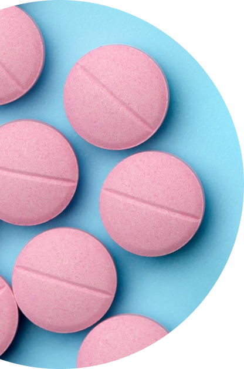
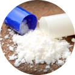
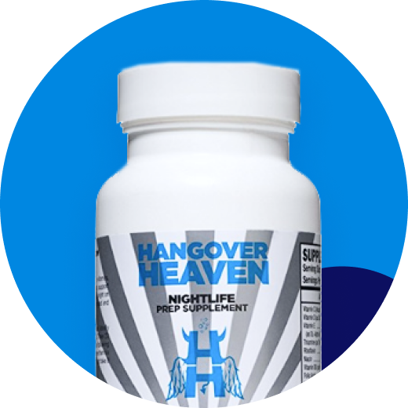
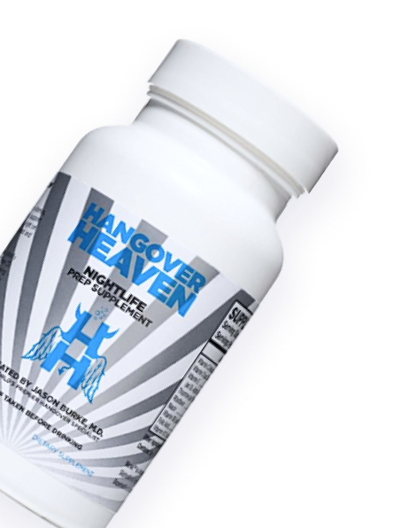
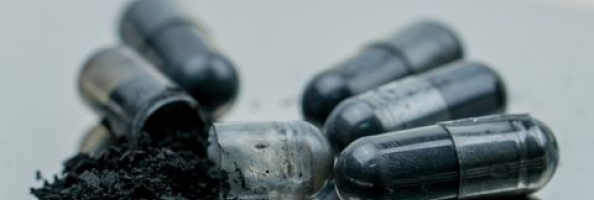

A hangover prevention pill is one of the best ways to prevent a hangover after a night of drinking. By taking a hangover prevention pill before you start drinking, you won’t experience the unpleasant symptoms associated with hangovers. Headaches, nausea, fatigue, brain fog, anxiety, sweating, disrupted sleep - all these symptoms occur from consuming too much alcohol and the severity of them varies from person to person.
But with a hangover prevention pill, you can wake up the next morning feeling great and ready for the day, completely hangover-free. Go to work and actually show up on time feeling refreshed, keep those morning plans scheduled that you’ve had all week - When you take a hangover prevention pill, you’ll be able to accomplish what you need to get done that day.

How Do Hangover Pills Work?
Most symptoms of hangovers are caused by inflammation of the brain. The best pills to prevent hangovers will have fat-solubles, premium ingredients that your brain can absorb to help reduce inflammation, targeting and eliminating those debilitating hangover symptoms.
Here’s a basic overview of what is happening with your body when you’re hungover:
1
2
3
4
1 Inflammation of the brain which causes nausea and headaches.
2Oxidative stress caused by an imbalance in your body between antioxidants and reactive oxygen species.
3Overall dehydration.
4Glutamine rebound, where your body is trying to replace crucial parts of this amino acid which you need for your immune system. This rebound process causes some of the anxiety and loss of sleep associated with hangovers.
Pills to prevent hangovers address all of the above issues, helping to restore balance in your body.
The key thing to remember about an anti-hangover pill is that it’s all about prevention. You want to have a proactive approach to your hangover, rather than reactive. So the best way to take a hangover prevention pill is 20 minutes before you start drinking alcohol. In the case that you forget to take your anti-hangover pill, don’t worry, just try to take them before you go to sleep. You can also take them the next morning when you wake-up, since some hangovers evolve during the course of the day (especially in people over 40 years of age).
What are the ingredients in hangover pills?
For the best hangover prevention pills, you need the best ingredients. Hangover pills require a variety of ingredients to treat hangovers, due to the complexity of a hangover. If a hangover pill only has one ingredient, it isn’t going to work. Our hangover pills at Hangover Heaven have multiple antioxidants and natural anti-inflammatories, all of which are essential to getting you back to feeling good and productive. Our ingredients include:

Taurine
Taurine is a fast-acting antioxidant and energy booster. It helps treat hangover-related fatigue, oxidative stress and blood toxicity. It is considered an essential amino acid.
Alpha Lipoic Acid is an antioxidant found naturally in our bodies. It is helpful in reducing inflammation and protecting cells throughout the body. It is also found in foods such as yeast, broccoli, spinach, and meats such as liver and heart.
Alcohol is a diuretic, meaning it causes you to urinate much more frequently than normal. And because of this, you end up depleting your body of crucial vitamins, like vitamins B, vitamins C and E. These vitamin ingredients in our pills to prevent hangovers replenish your body’s stores of these essential nutrients.
When we consume alcohol, it puts a strain on our liver, specifically the cells in our liver. Milk thistle has been known to have a protective effect on our liver cells.
The amino acid N-acetylcysteine (NAC) is a nutrient for the liver. It produces an antioxidant glutathione, which helps reduce oxidative stress in our bodies.
Similar to vitamins, drinking alcohol causes us to lower the amount of zinc in our bodies. Zinc is important for gut health and immune function. Because it isn’t something our body produces naturally, we have to get it through other sources, such as supplements.
Both Selenium and Molybdenum are two important minerals that help to metabolize the breakdown products of alcohol, preventing the toxins from building up in our bodies.
Dr. Jason Burke’s medical practice has treated more than 40,000 hangovers.
What makes a Hangover Heaven supplement the best hangover pill on the market is our ingredients. We only use high-quality, premium ingredients that are much more expensive than the ingredients used in other anti-hangover pills and therefore are more effective for treating hangovers. Cheap ingredients will lead to a cheap recovery (similar to drinking the lowest-priced alcohol on the shelf).
Unlike other providers, our hangover prevention pills come in three sizes so that you can select the most appropriate amount based on your alcohol consumption: 12-count, 42-count and 90-count.
Our hangover pills are taken before you start drinking, since we have found that a preventive approach to hangovers works much more effectively than a reactive approach. The amount of pills you take will depend on how much you plan to drink and how severe your hangovers tend to be after a night of drinking.


Best Hangover Pills to Prevent Hangovers
The best hangover prevention pills are going to have vitamins, minerals, antioxidants, and natural anti-inflammatories. All of these ingredients are important to treating the wide-variety of hangover symptoms. At Hangover Heaven, we only use high-grade ingredients and never add sugar.
Additional treatments also highly-effective when it comes to treating hangovers include our IV treatment, which contains hydration, vitamins, electrolytes, and antioxidants.
Electrolyte Concentrate is a doctor-formulated concentrate with sodium, potassium, and magnesium. These three vital nutrients and minerals help to support hydration, heat tolerance, muscle function, and energy conversion.
Hangover Pill Related Articles
For more information on hangover pills and how to treat your hangovers, check out our below articles.

Activated Charcoal Pills for Hangovers: Benefit or Bunk?
Charcoal mills only work mildly for hangovers. And in order for them to have any effect, they have to absorb the alcohol you are drinking. So if you are going to take a pill to absorb the alcohol you just purchased (minimizing the effects of alcohol), why drink it in the first place?
Yes, Advil is safe to take for a hangover, but you have to be careful, as your stomach is already irritated. Try taking Pepcid, Prilosec, or something similar to help calm your stomach. We use an IV form if Advil for our IV hangover treatments and can also give IV pepcid. Our hangover pills contain curcumin, which has similar anti-headache/anti-inflammatory effects as Advil.
Yes, Advil is safe to take for a hangover, but you have to be careful, as your stomach is already irritated. Try taking Pepcid, Prilosec, or something similar to help calm your stomach. We use an IV form if Advil for our IV hangover treatments and can also give IV pepcid. Our hangover pills contain curcumin, which has similar anti-headache/anti-inflammatory effects as Advil.
Yes, Advil is safe to take for a hangover, but you have to be careful, as your stomach is already irritated. Try taking Pepcid, Prilosec, or something similar to help calm your stomach. We use an IV form if Advil for our IV hangover treatments and can also give IV pepcid. Our hangover pills contain curcumin, which has similar anti-headache/anti-inflammatory effects as Advil.
Yes, Advil is safe to take for a hangover, but you have to be careful, as your stomach is already irritated. Try taking Pepcid, Prilosec, or something similar to help calm your stomach. We use an IV form if Advil for our IV hangover treatments and can also give IV pepcid. Our hangover pills contain curcumin, which has similar anti-headache/anti-inflammatory effects as Advil.
Yes, Advil is safe to take for a hangover, but you have to be careful, as your stomach is already irritated. Try taking Pepcid, Prilosec, or something similar to help calm your stomach. We use an IV form if Advil for our IV hangover treatments and can also give IV pepcid. Our hangover pills contain curcumin, which has similar anti-headache/anti-inflammatory effects as Advil.
Yes, Advil is safe to take for a hangover, but you have to be careful, as your stomach is already irritated. Try taking Pepcid, Prilosec, or something similar to help calm your stomach. We use an IV form if Advil for our IV hangover treatments and can also give IV pepcid. Our hangover pills contain curcumin, which has similar anti-headache/anti-inflammatory effects as Advil.
Yes, Advil is safe to take for a hangover, but you have to be careful, as your stomach is already irritated. Try taking Pepcid, Prilosec, or something similar to help calm your stomach. We use an IV form if Advil for our IV hangover treatments and can also give IV pepcid. Our hangover pills contain curcumin, which has similar anti-headache/anti-inflammatory effects as Advil.